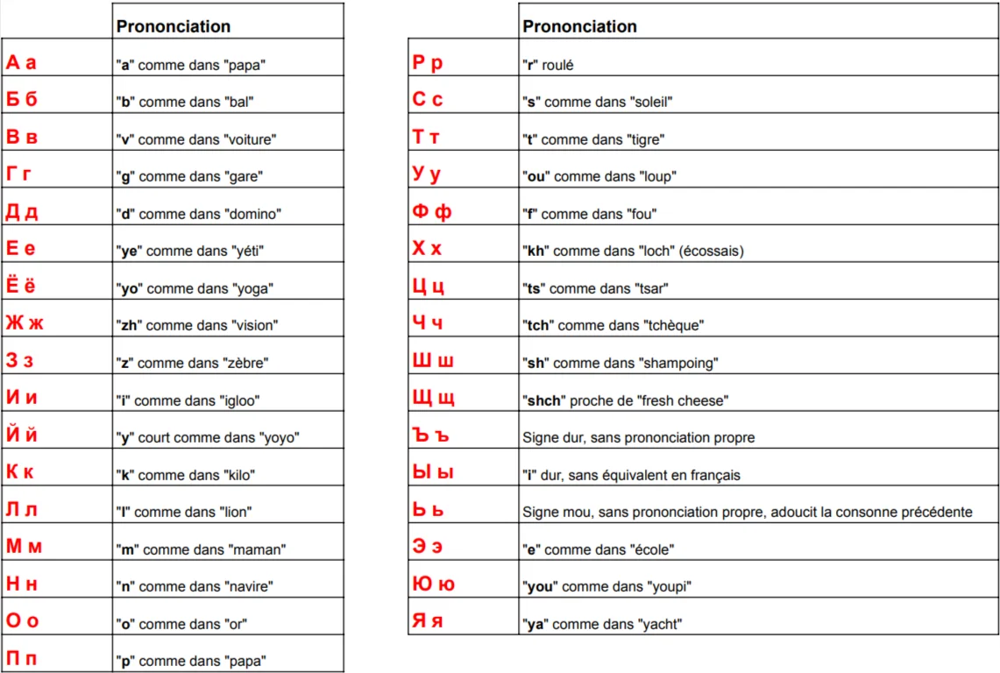

| Ton | Symbole | Courbe | Description | Hanzi | Pinyin | Sens | Écoute |
|---|---|---|---|---|---|---|---|
| Ton 1 | ā (¯) | — | Haut et stable | 妈 | mā | Maman | |
| Ton 2 | á (/) | ↗ | Montant (interrogatif) | 麻 | má | Chanvre | |
| Ton 3 | ǎ (∨) | ↘↗ | Descendant puis montant | 马 | mǎ | Cheval | |
| Ton 4 | à (＼) | ↘ | Sec et autoritaire | 骂 | mà | Gronder | |
| Ton 0 | a (·) | · | Neutre, très court | 吗 | ma | Particule ? |
| Lettre | Son | Lettre | Son | Lettre | Son | Lettre | Son |
|---|---|---|---|---|---|---|---|
| А а | a | З з | z | П п | p | Ц ц | ts |
| Б б | b | И и | i | Р р | r roulé | Ч ч | tch |
| В в | v | К к | k | С с | s | Ш ш | ch |
| Г г | g | Л л | l | Т т | t | Щ щ | chtch |
| Д д | d | М м | m | У у | ou | Ы ы | i guttural |
| Е е | yé | Н н | n | Ф ф | f | Э э | é |
| Ж ж | j (jeu) | О о | o | Х х | kh | Ю ю | you |
| Й й | y (yeux) | Ë ë | yo | ъ / ь | signes | Я я | ya |

Les 3 systèmes d'écriture
| Système | Rôle | Nb | Exemple | Priorité |
|---|---|---|---|---|
| Hiragana ひらがな | Mots natifs, conjugaisons, particules | 46 | たべる | En priorité |
| Katakana カタカナ | Mots étrangers, onomatopées | 46 | コーヒー | Après hiragana |
| Kanji 漢字 | Caractères sino-japonais | 2000+ | 食べる | Progressivement |
Alphabet latin avec diacritiques spécifiques · 7 cas grammaticaux
| Lettre | Prononciation | Astuce |
|---|---|---|
| ą | « on » nasal | comme dans « bon » |
| ę | « en » nasal | comme dans « bien » |
| ó | « ou » | identique à « u » |
| ł | « w » anglais | comme dans « water » |
| ś / si | « ch » très doux | |
| ć / ci | « tch » très doux | |
| ź / zi | « j » très doux | |
| ż / rz | « j » de « jeu » | |
| ń / ni | « gn » espagnol | comme « señor » |
| sz | « ch » de « chat » | |
| cz | « tch » de « tchin » |
Umlauts et caractères spéciaux
| Caractère | Prononciation | Exemple | Sens |
|---|---|---|---|
| ä / Ä | é (long) | Mädchen | Fille |
| ö / Ö | eu (français) | schön | Beau |
| ü / Ü | u (français) | über | Sur / Au-dessus |
| ß | ss (long) | Straße | Rue |
Articles définis (cas nominatif)
| Genre | Article | Exemple |
|---|---|---|
| Masculin | der | der Mann (l'homme) |
| Féminin | die | die Frau (la femme) |
| Neutre | das | das Kind (l'enfant) |
| Pluriel | die | die Kinder (les enfants) |
Les 4 cas (Kasus) — article défini
| Cas | Rôle | Masc. | Fém. | Neutre | Pluriel |
|---|---|---|---|---|---|
| Nominatif | Sujet | der | die | das | die |
| Accusatif | COD | den | die | das | die |
| Datif | COI | dem | der | dem | den |
| Génitif | Possession | des | der | des | der |
Caractères spéciaux et prononciation
| Caractère | Prononciation | Exemple | Sens |
|---|---|---|---|
| á é í ó ú | voyelle accentuée (accent tonique) | café, fácil | — |
| ñ | « gn » (comme « agneau ») | mañana | Demain |
| ü | « u » prononcé (après g) | pingüino | Pingouin |
| ¿ … ? | question (ouvrant + fermant) | ¿Cómo estás? | Comment vas-tu ? |
| ¡ … ! | exclamation (ouvrant + fermant) | ¡Hola! | Bonjour ! |
Articles définis
| Genre | Singulier | Pluriel | Exemple |
|---|---|---|---|
| Masculin | el | los | el libro (le livre) |
| Féminin | la | las | la mesa (la table) |